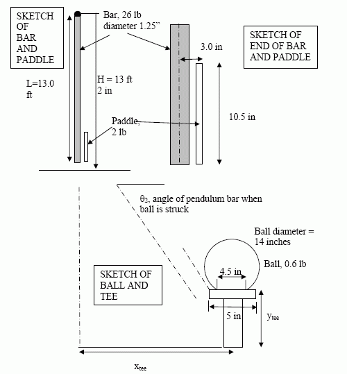

The ME123 Competition this year was referred to as Gargantuan Golf, also known as the Tower of Power. The Tower of Power is a very large pendulum that simulates a giant golf club. The pendulum can be pulled back to a varying starting angle, and then swings down and hits a ball that can be at a variety of different locations based on the tee that the team chooses to use. The goal is to get the ball into a cup that is placed at a given distance away from the pendulum.
So to recap, the team is given as inputs the distance of the cup from the pendulum, as well as the impact angle of the pendulum when it strikes the ball (which is determined by which tee the team chooses to use). The output is the initial angle from which the pendulum should be released. Here is a sketch of some of the components:
We used 2 different computer programs to model the action of the pendulum and ball: Matlab and Working Model. Matlab is a programming environment that we learned through the quarter, and which is a very powerful program to model physical motion. We accounted for things such as gravity, air resistance, and energy loss at collision, and used Euler's method to approximate equations of motion.
Working model is a powerful 2-D modelling package, which allows you to draw objects and give them properties, and then run a simulation of what would happen in real life. It also uses Euler's method to approximate these actions, but this work is all done behind the scenes, and only the time step is controlled by the user.
For the competition, all of the teams from one section were pitted against each other in a battle of time and accuracy. The competition MC would tell us all the distance of the cup from the pendulum, and then it was a race against time for each team to use their Working Model and Matlab simulations to output a value for the initial angle of the pendulum. Points were given for speed and for accuracy, and the top winners from each section competed in a final competition.